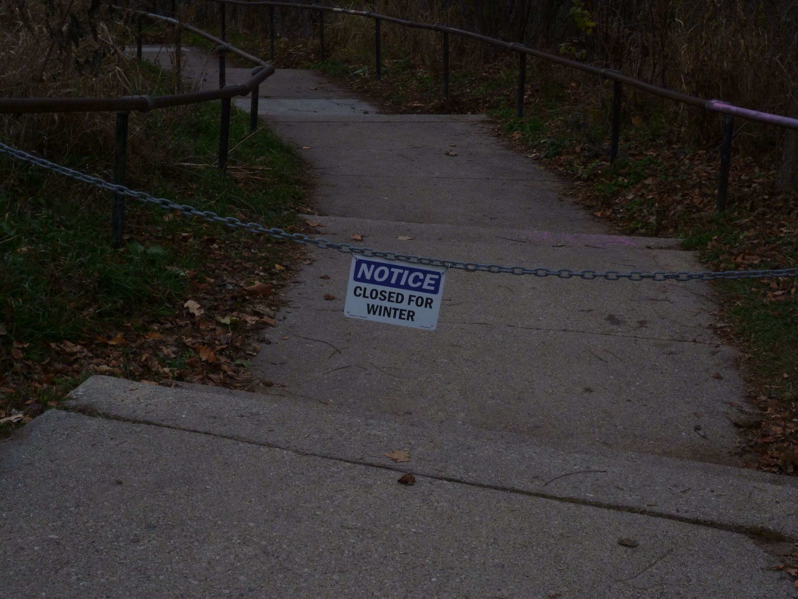
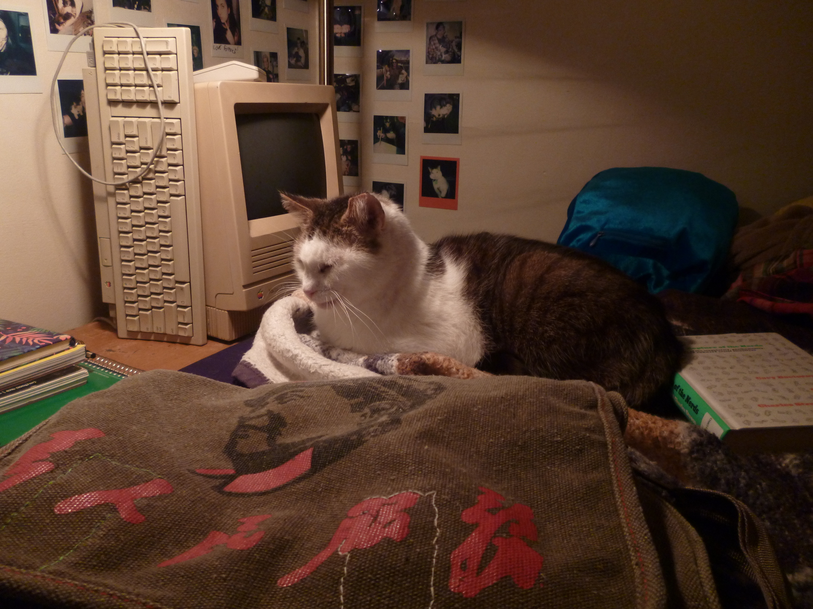
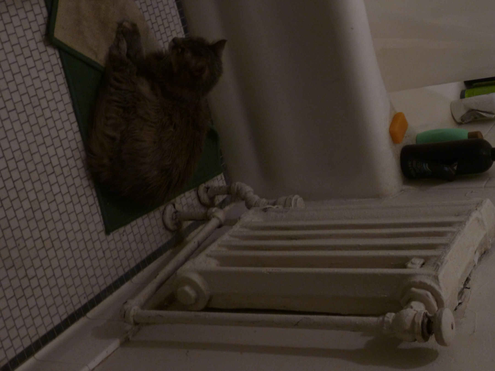
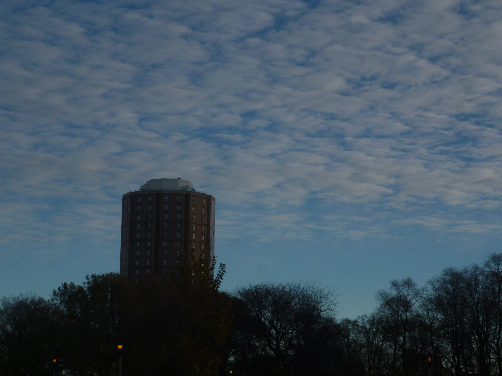
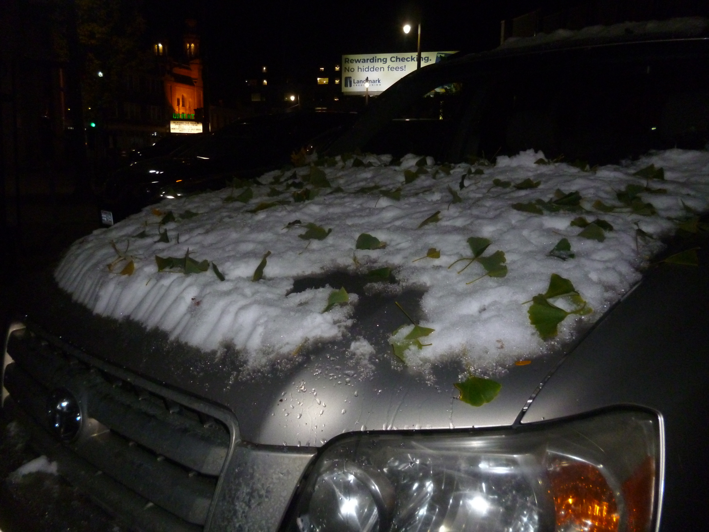
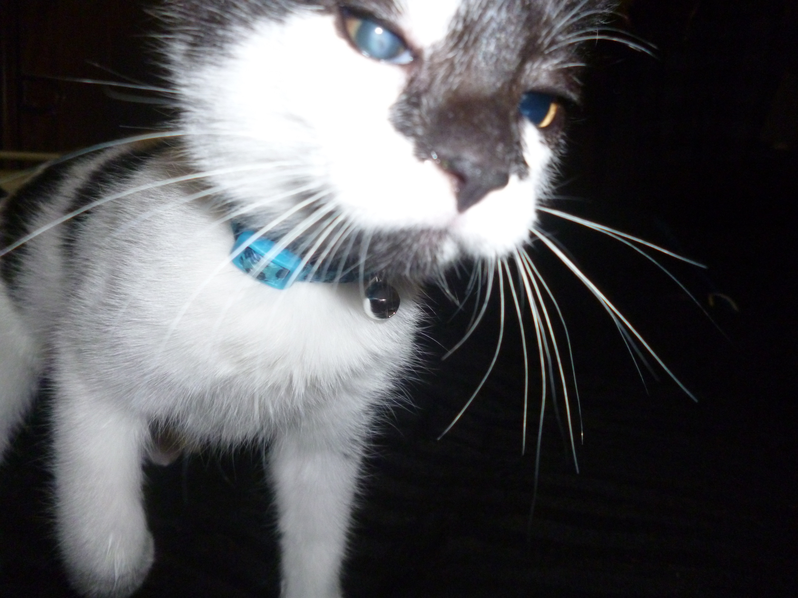
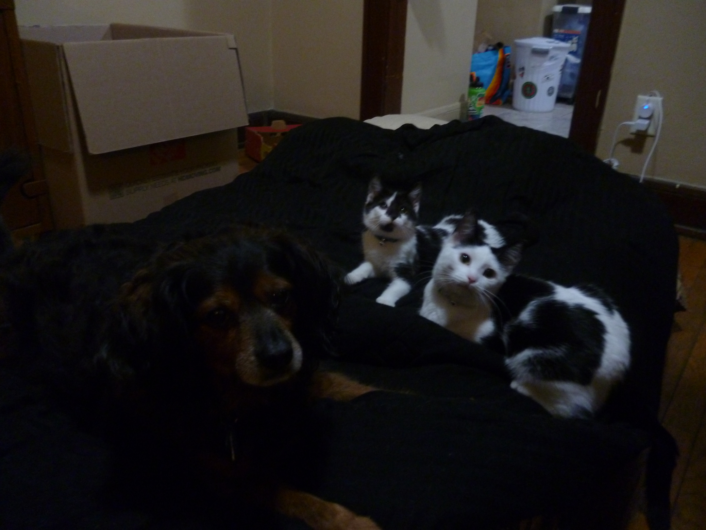
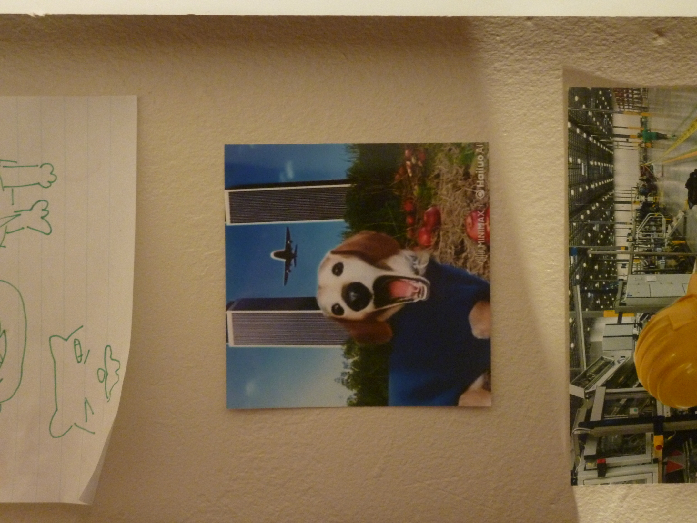

Chilled to the Bone
November 29, 2025

It's getting really cold. I have been opting not to walk to work some days because of the danger it poses to my skin.
November 29, 2025
It's getting really cold. I have been opting not to walk to work some days because of the danger it poses to my skin.
November 29, 2025

She runs! New battery and MAF.
November 28, 2025

Hermano!!
November 27, 2025

Someone left this drawer open and she decided to slip on in among the dish towels. Too bad my dad is allergic to her...
November 27, 2025

Her name is Zoey. She has cancer, but she is oh so sweet. They say it's in remission now.
November 26, 2025
On the way to my parents house for thanksgiving. I love the bus!
November 24, 2025
Tonight, Black Bean passed. He was on his way to the emergency vet after his condition had gotten significantly worse. Rest in peace. ♥
November 23, 2025

The sunrise looks so pretty.
November 18, 2025
I ♥ low pressure sodium lamps.
November 18, 2025
This one lamp I have in my room puts out an incredible amount of heat. Herman was loving it.
November 17, 2025
How warm it must be to be so little and to sit so close to the radiator. Warm kitty.
November 17, 2025
Tower, again. How odd.
November 16, 2025
The tilt on these steps really doesn't seem so bad on the way up. On the way down is a different story. They are sloping down the hill because the dirt has started to wash out.
November 15, 2025
I have always found these towers along the Milwaukee River fascinating. They look so out of place.
November 10, 2025
I don't know where this car came from, as it had not snowed where I live yet.
November 10, 2025
How cool!
November 9, 2025
Black Bean passed a few weeks after this picture. :( He had a really aggressive respiratory infection that came back x2 as strong. R.I.P. Black Bean :(.
November 9, 2025
Bobby, Black Bean, and Cheese
November 4, 2025
I did not generate this image. I just thought it was funny so I printed it out.
November 3, 2025

The weather changes, the breeze cools, the turtles go, and the water recedes.
November 2, 2025

Haven't seen him in a while. He's so sweet!!